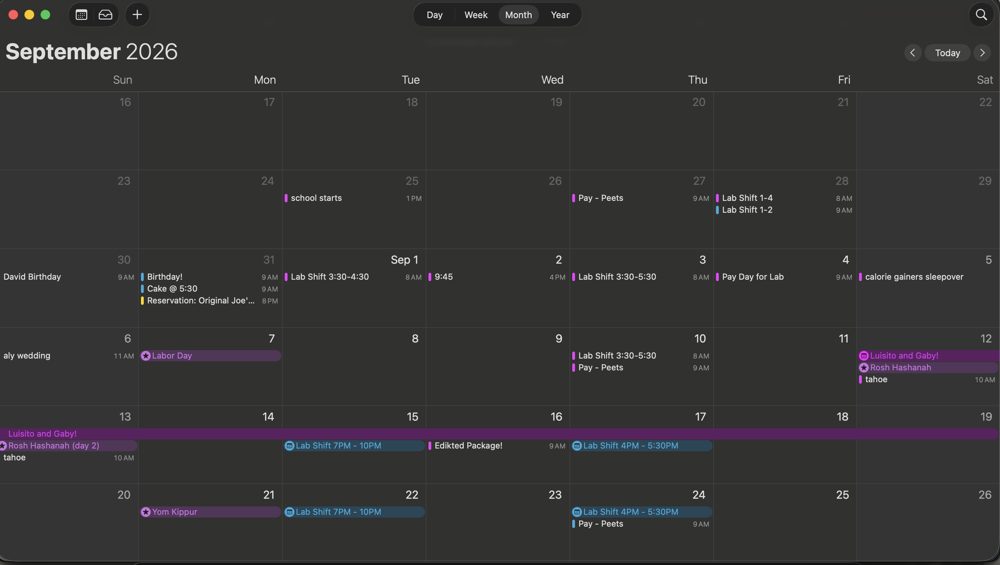

1. Waking Up
Starting off my day, I wake up at 5 AM (sometimes..). Usually it takes a couple of alarms to fully wake up. Today, I woke up at 5:27 AM
2. Checking Transit
After waking up, I start to get ready for the day. I do my morning routine, and then check out the transit app to see what time I need to catch my bus to make it to my first class.
3. Doom Scrolling On the Bus
Once I'm on my bus, it usually takes me a hour to get into the City, so I always take the time and scroll through instagram.
4. Finishing Homework
After getting to school, I typically have 30 minutes before my first class starts. I use this time to finish or start my homework I have due.
5. Taking Notes in Class
Most of my class consists of taking notes and participating in discussions. Usually, I try to be as engaged as possible and take as many notes as I can.
6. Commuting to Work
When my classes end earlier in the day, I am usually scheduled to work back at the Peet's Coffee in San Rafael, so, I need to make sure my bus makes it on time for my shift.
7. On That Barista Grind
Once I clock in, I start my shift, spending a couple hours on bar making drinks and serving customers.
8. Closing Down the Store
We close around 6:30 PM, so around that time, I begin to close down our mobile store, starting of with food items.
9. Winding Down
When I get home, I usually spend some time relaxing and doing activities I enjoy (as long as I am done with my work for the day). I like to watch a youtube video to wind down.
10. Catching Up With My Partner
I always call my partner at the end of the day to catch up and talk about what happened during the day. Usually we will be doing other stuff while talking. While I scrolled on pinterest, he meal prepped for the week.
11. Reading Before Bed
Before going to bed, I like to read a book on my kindle. I usually read for about 30 minutes before going to sleep.
12. Calendar Check

Finally, I double check my calendar to see if I have anything important coming up the next day.
Welcome to The Feed! I'm Ale! I am a Design student at the University of San Francisco. I grew up in the Bay Area and have always been interested in design and creativity. Some of my favorite things to do are listening to music, reading, and spending time with friends.
Here is a little glimpse into my life and how I use technology on a daily basis.